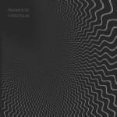
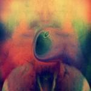

Music Reviews
-

Nite Jewel One Second of Love
Having modeled her first releases on female urban contemporary with a lo-fi feel, the California native swerves over to the smooth-tempered rhythms of sophisti-pop.
Juan Edgardo Rodríguez unwinds... -

Pinkunoizu Free Time
Pinkunoizu does something different, often complex, on Free Time without succumbing to its own complexity or becoming inaccessible.
Andrew Davison becomes unstuck in time -
Mr. Dream Fatherland EP
Fatherland, EP from millennial-Alternative band Mr. Dream, offers 6 songs with plenty of “loud” and just enough “strange.”
Sean Caldwell cannot kiss his own face... -
Sleigh Bells Reign of Terror
While you may have expected Sleigh Bells to be hemmed-in by their very distinctive aesthetic, Reign of Terror marks a confident step forward from their debut, without straying far from what made them exciting in the first place.
Stephen Wragg dons a leather jacket & shades... -

Lambchop Mr. M
On their eleventh studio album, Lambchop take further steps away from the alt. country genre they helped create and find themselves in a field all of their own.
Joe Rivers reviews... -

Perfume Genius Put Your Back N 2 It
Put Your Back N 2 It, the second release by the Seattle-born balladeer, is the rarest of breeds - a fairly conventional pop record that gives the term piano ballad a very good name.
Juan Edgardo Rodríguez likes this scent... -

Frankie Rose Interstellar
Frankie Rose's first solo album has a title takes us appropriately far away from her past work, but does it also fall into the realm of hyperbole when describing her own growth and exploration?
Forrest Cardamenis goes... -
Of Montreal Paralytic Stalks
In relinquishing his vice-like grip on Of Montreal, Kevin Barnes has allowed for a fuller sound and broader intake of influences, though he remains disarmingly frank lyrically. Whether it has gone to plan is not entirely obvious.
Gabriel Szatan has a mildly enjoyable headache... -

Young Magic Melt
So while standards are generally high on the record’s first half, it feels like three EPs have been welded together to form Melt.
David Zammitt reviews... -
My Best Fiend In Ghostlike Fading
The quintet finds themselves with an enjoyable debut full of potential but slowed by missteps. The alluring, spacey music will take you into a world all of its own, even if it sometimes lets you glance the outside world.
Forrest Cardamenis gets lost in...